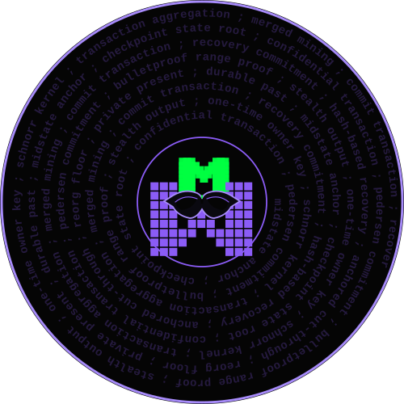

Private transactions
Confidential commitments, range proofs, stealth-style outputs and one-time ownership keys are built into the accounting model.

midwimbleMidwimble is a MimbleWimble-inspired privacy chain that periodically anchors its state into Midstate — creating durable checkpoints for recovery, finality and eventually anchored cut-through.
Most blockchains preserve every payment as archaeology.
Midwimble starts from a different premise.
Midwimble handles private economic activity. Midstate provides an external, post-quantum-oriented cryptographic memory.
Confidential commitments, range proofs, stealth-style outputs and one-time ownership keys are built into the accounting model.
Midwimble checkpoints can be committed into Midstate explicitly or through merged mining, without turning Midstate into a privacy chain.
Outputs can carry hidden hash-based recovery commitments that remain unused unless a future cryptographic catastrophe requires migration.
The planned pruning model uses finalized Midstate checkpoints as horizons below which old spent history can eventually disappear.
If the cryptography protecting Midwimble ever becomes unsafe, an externally recorded checkpoint gives the network a deterministic candidate state from before the break.
The anchor does not expose who paid whom. It records only enough to say:
This state existed.
version 1
network midwimble
height 2,500,000
header_hash 9f2a…71c4
state_root a84d…02b1
cumulative_work 0000…e912
previous 53bc…90af
anchor → MIDSTATEMidwimble is research software. The interesting parts are implemented far enough to test, break and improve — not to pretend the work is done.
Midwimble is an experiment in building a privacy chain that knows what to do when cryptography changes.
Explore Midwimble on GitHub